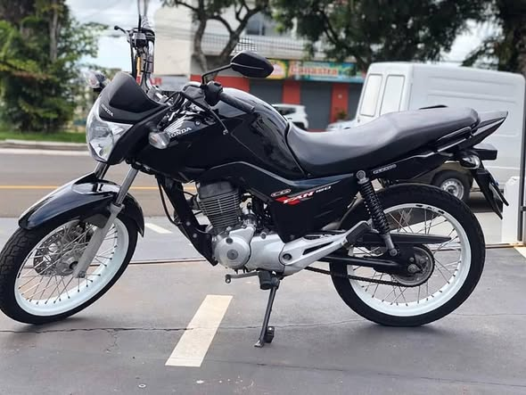
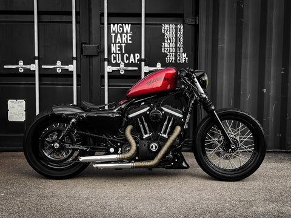

Projeto MotoQuerica
Esta página existe para registrar cada pequena vitória da Erikinha: os primeiros metros, a primeira troca de marcha, a primeira curva, o primeiro passeio e, um dia, o momento em que ela finalmente vai subir na Harley dos sonhos.
Cada treino salvo aqui vira parte da história. Cada quilômetro registrado aproxima um pouco mais dos 10.000 km e dos R$ 50.000,00 necessários para transformar esse sonho em realidade.
Já percorridos
Ainda faltam
Da jornada concluída
Sonho final
Registre cada treino da Erikinha. Cada quilômetro salvo vai aproximando ela da Harley-Davidson 883 e desbloqueando novas conquistas.
Cada treino salvo aparece aqui automaticamente, mostrando a evolução da Erikinha ao longo da jornada.
A jornada da Erikinha começou na Honda Fan 150 ESDi 2014. Leve, econômica e perfeita para aprender. Mas cada quilômetro registrado aproxima ela do grande sonho: a Harley-Davidson 883 R 2013.
A Fan é o começo da história. A Harley é a recompensa no final dos 10.000 km. 🧡
A moto que está ensinando ela a pilotar.

A primeira moto da jornada. Foi nela que tudo começou. 💙
O sonho esperando no final da jornada.

A Harley esperando pela Erikinha no final dos 10.000 km. 🧡
Cada quilômetro registrado desbloqueia novas conquistas. Quando a Erikinha chegar aos 10.000 km, ela estará pronta para a Harley.